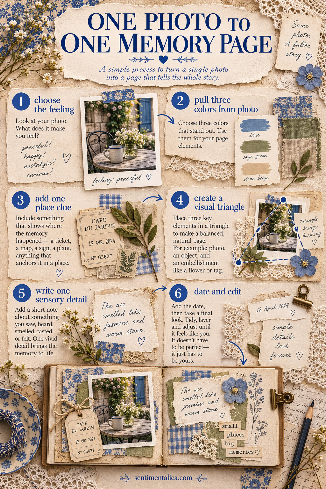
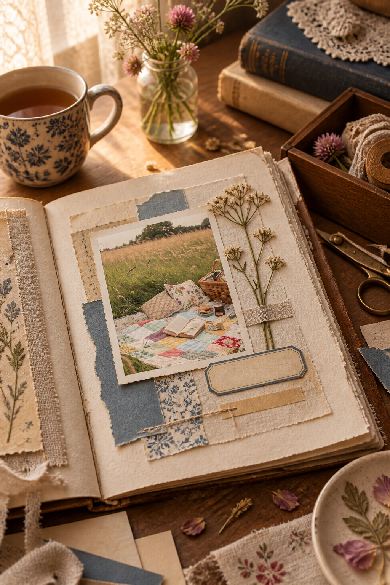

One photograph is enough for a complete memory page. You do not need a coordinated collection or a long story. The photograph already contains a palette, a mood and dozens of small details; the layout simply helps you notice them.
Use the original only if it is replaceable. For an old family photograph or your only print, scan it first and work with a copy.
Step 1: Name the feeling
Look at the photograph before choosing paper. Write three words about how it feels rather than what it shows: peaceful, noisy, windblown; tender, awkward, bright.
Circle one word. This becomes your editing rule. If a material does not support that feeling, leave it out even if it matches the subject.
Step 2: Pull a small palette
Choose two colors visible in the photograph and one neutral. One color should lead, the second should appear in smaller amounts, and the neutral should give the eye somewhere to rest.
The colors need not match exactly. A faded navy paper can stand in for a blue sky, while warm kraft paper can echo a field, wooden table or late light.
Step 3: Give the photo a quiet mat
Place the photograph on a paper mat slightly larger than the print. This separates it from a textured background and gives fragile edges support.
For a calm page, keep the borders even. For an informal page, offset the photograph so the mat is wider at the bottom or on one side. Avoid adding several decorative mats; one useful layer is usually stronger.
Step 4: Echo one detail
Find a detail inside the image—a flower, stripe, curve, texture or repeated shape. Echo it once elsewhere on the page. A pressed stem might repeat grass in the picture; a torn blue strip might repeat a coat or patch of sky.
This creates connection without relying on themed embellishments.
Step 5: Add one true sentence
Write something the image cannot show. Try one of these beginnings:
- “What I remember most is…”
- “Just outside the frame…”
- “We did not know yet…”
- “The ordinary part I want to keep…”
A specific sentence carries more memory than a generic title. If the words are private, place them on a card behind the photograph or inside a small fold.
Step 6: Finish with a date and one tactile piece
Add the date or approximate season, then choose one tactile element: thread, fabric, a pressed botanical or a tiny piece of paper saved from the day. One is enough.

A quick layout map
Place the photograph slightly away from the page center. Let the echoed detail touch or point toward it. Put the journaling close enough that the eye reads image and words as one story. Keep the opposite corner quieter.
Before gluing, take a phone photo of the arrangement and view it small. If your eye lands on an embellishment before the photograph, reduce or remove that embellishment.

The best memory page does not explain everything. It preserves one image, one feeling and one detail you might otherwise forget. That is already a complete story.